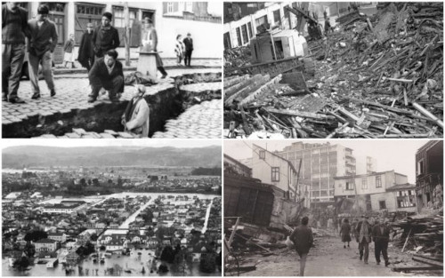

Terremoto é um tipo de tremor abrupto e intenso que ocorre na superfície terrestre graças a fenômenos geológicos que ocorrem na litosfera. As suas consequências, para o ser humano, podem ser severas, acarretando a destruição de cidades e paisagens naturais, além de provocar sérias catástrofes, a exemplo do desastre ocorrido na Usina Nuclear de Fukushima, no Japão.
O Chile é um dos países com maior atividade sísmica da América Latina, já que grande parte de seu território está exposto à convergência das placas tectônicas Nazca e Sul-americana. E no domingo dia 22 de maio de 1960 às 15:11 da tarde o chão começou a tremer na cidade de Valdivia oque viria a ser o maior tremor ja registrado na história da humanidade, o tremor alcansou incríveis 9,5 Graus na escala Richter e matou 2000 mil pessoas e deixou mais de 2milhões feridas.
O terremoto de Valdivia é até hoje lembrado como uma das maiores catastrofes naturais da história, esse terremoto causou estragos e mortes nas Filipinas, EUA e Japão. Certamente jamais será esquecido por aqueles que perderam seus entes queridos para o que até hoje chamamos de "O maior terremoto do mundo".
